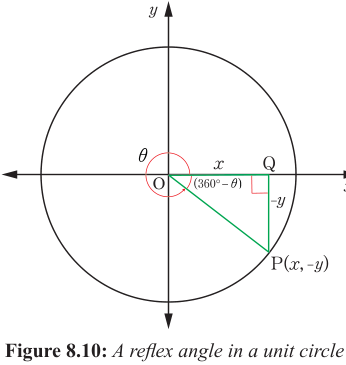
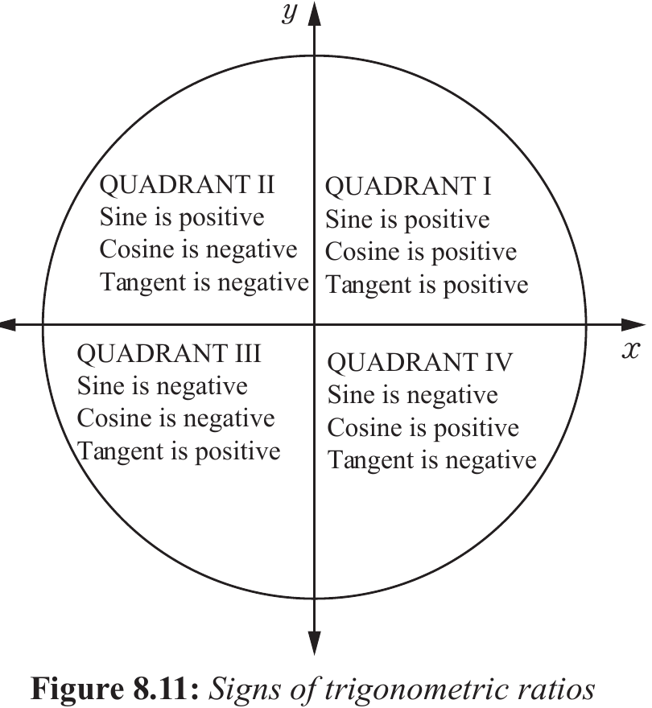

The trigonometric ratios in the fourth quadrant can be obtained by using the lengths of sides of the right-angled triangle OQP as follows:
Figure 8.10 shows that, the trigonometric ratios of sine and tangent in the fourth quadrant are negative, while for the cosine is positive as per corresponding x and y axes.
Signs of trigonometric ratios
Trigonometric ratios can be positive or negative depending on the size of the angle or the quadrant in which the angle is found.
The results obtained are summarized in Figure 8.11. These results are helpful in determining whether sine, cosine, and tangent of an angle is positive or negative.

Example 8.11
Write the signs of each of the following trigonometrical ratios:
Solution
(a) 170° lies in the second quadrant, hence, sin 170° is positive.
(b) 240° lies in the third quadrant, hence, cos 240° is negative.
(c) 310° lies in the fourth quadrant, hence, tan 310° is negative.
(d) 300° lies in the fourth quadrant, hence, sin 300° is negative.
Example 8.12
Express each of the following in terms of an acute angle:
Solution
(a) 165° is in the second quadrant, then
(b) 317° is in the fourth quadrant, then
(c) 95° is in the second quadrant, then
(d) 258° is in the third quadrant, then